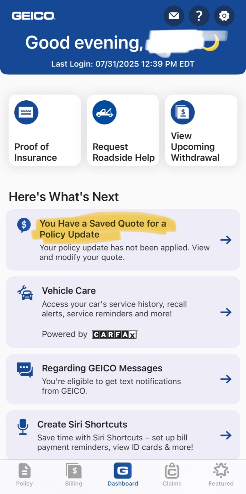
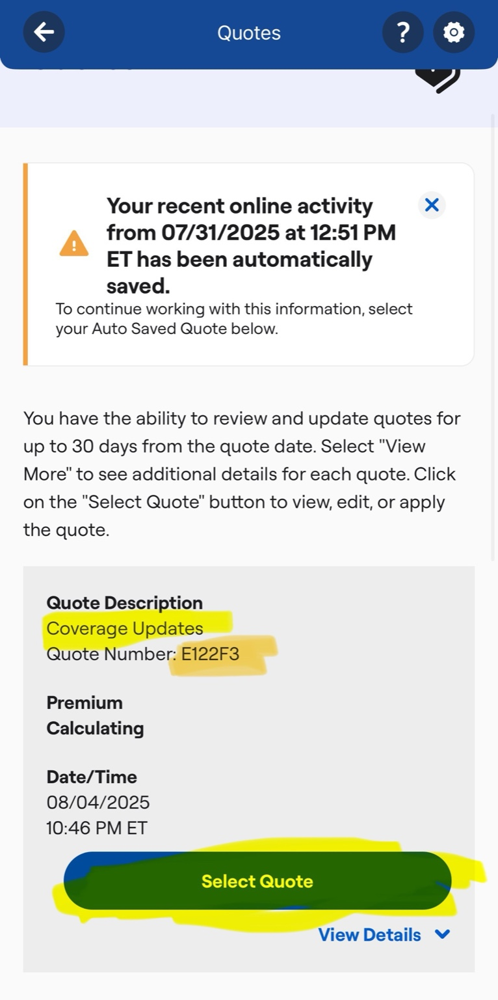
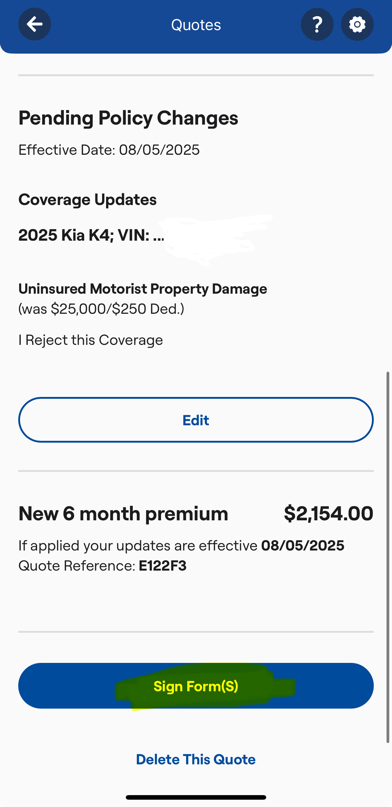

Open the GEICO app and tap on the "Login" button to sign in with the policyholder’s credentials.

Follow the steps below to access the policy update that includes the option forms.
Open the GEICO app and tap on the "Login" button to sign in with the policyholder’s credentials.
Once logged in, locate the section that says "You Have a Saved Quote for a Policy Update" and tap it. This will give you access to the quote containing the required forms.
Select the correct quote you need to sign the forms for — ideally by using the quote number (preferred), or by quote type (in this example, it’s a Coverage Change quote). Then, tap the “Select Quote” button.
Advise PH that after they select the right quote advance until the end of the quote until they see a blue button named Sign Forms
I made it!